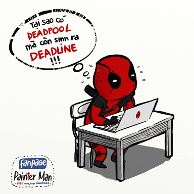
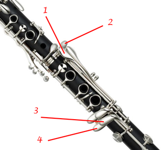
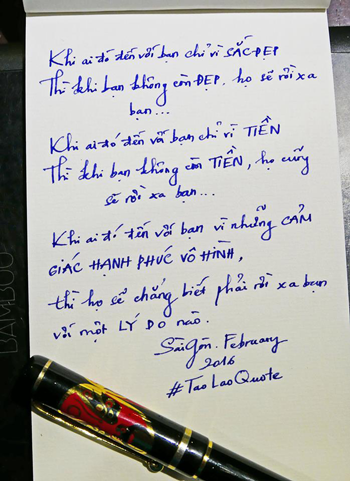

Viết linh tinh
Ngày 16 tháng 4 năm 2016
Một ngày như bao ngày, sáng mở mắt ra là research công nghệ. Tới trưa thì ngủ một xíu rồi lại research. Tới chiều thì bắt đầu chạy project. Mỗi ngày trôi qua cứ chán chán sao ấy.
Tại sao mày lại như vậy?
Chả biết cái gì khỉ mà như vậy. Mỗi lúc chán nản, lười lười thì luôn nghĩ tới câu hỏi: "Nguyên nhân gì khiến mày bắt đầu?". Nếu bạn không chịu nhấc mông lên và đi thì bao giờ tới. Và thế là phải ráng ráng vượt qua. Nhưng thường để vượt qua một điêu gì đó có lẽ là... Chuyện hôm nay cứ để ngày mai.
Đôi khi, mình cũng bệnh bệnh lắm. Có lúc nghĩ vẩn vơ mấy chuyện ở đâu rồi đem chuyện buồn tới cho mình. Khi nhỏ bạn thân của mình có người yêu, mặc dù 2 đứa có không được gần nhau nhưng thấy cách nó quan tâm tới thằng đó. Mình có vẻ ghen tị. Như đã nói, có lẽ mình chú tâm vào công việc để kiếm tiền (mục đích thì nói sau). Do đó, tìm một ai đó chia sẻ những lúc "đơ" cũng cần thiết. Có thể bạn sẽ hỏi tại sao mình không tìm bạn bè để chia sẻ? Cơ bản thì mỗi đứa đều có việc riêng của nó, với lại mình cũng không cùng suy nghĩ với nhiều người. Nên việc trải lòng cũng hơi khó.
Chuyện gì, kể ra coi có giúp được mày không?
Kể ra hả? Deadline, project đang làm, chuẩn bị cho một số project tương lai,... Có một số việc chỉ nên kể với một số người nhất định. Do đó, đôi khi mình gặp không ít khó khăn khi giao tiếp với nhóm. Với lại, mình nghĩ theo góc nhìn A, bạn mình nhìn theo góc B. Mà làm nhóm cũng không nên căng thẳng, thôi thì B được thì B. Tính mình vậy đó. Nói nhiêu đây thôi.
Rảnh hông? Làm việc khác đi!
Cũng có làm việc khác chứ, dạo này mới tậu cây kèn Clarinet để tập. Tại vì trong lúc phân vân chả biết nên lựa Flute hay Clarinet, có một thằng em nói sẽ nhượng lại cây Flute nên mới hốt cây Clarinet trước. Trong thời gian làm quen với nó, cũng được một tháng rồi, mình ngộ ra được một số thứ và đối chiếu nó với cuộc sống. Chẳng hạn, clarinet có thiết kế 2 cặp phím. Cặp 1 trung với 4 bấm sẽ tạo ra nốt E (Mi) thấp nhất trên kèn. Cặp 2 trùng với 3 bấm sẽ tạo ra nốt F (Fa) thấp nhất trên kèn. Tại sao lại thiết kế như vậy?. Đơn giản vì thử di chuyển ngón út tay trái để bấm E - F nhanh nhất có thể (kỹ thuật trill) thì sao. Ngoài E - F, nó sẽ kết hợp với một số phím khác để tạo ra nốt B (Si) và C (Do).
Trong cuộc sống cũng như vậy, có một số thứ nó có ít nhất 2 giải pháp để xử lý một vấn đề. Lúc đó mình cứ đâm đầu vào 1 trong số chúng rồi tự gây stress. Á đù, giống mình hiện tại vậy?
Ngộ ra gì đó
Rốt cuộc là chả có chuyện gì đáng để phải đơ như vậy cả. Suy nghĩ vớ vẫn cho lắm vào rồi tự làm mình stress.
